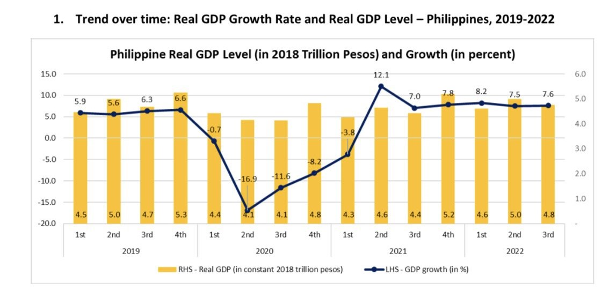
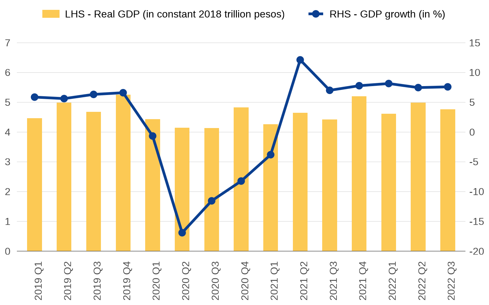

Should you dual wield y axes?
Points to keep in mind when resorting to a secondary axis
bar
line
Consider this: all charts are essentially squiggles on a Cartesian plane. There’s a horizontal, or x, axis and there’s a vertical, or y, axis. This implies that the underlying datasets ever only need two columns, corresponding to the two axes. Many chart enthusiasts seem to be guided by this principle, which is why they detest charts that violate this setup, like pie charts.
Another chart that maybe violates this setup are those with two different y axes, or dual axis charts. These are very popular. Today, Planning Secretary Arsenio Balisacan accompanied his tweet on the Philippine third quarter GDP numbers with this chart:

What’s wrong with it?
The first problem is that there isn’t really a reason why it has to be a dual axis chart at all. The level of real GDP is not meaningful to most people and visualizing it doesn’t provide much insight.
The second problem is that it’s sloppily made. In the legend, “Real GDP” (the bars) is on the left and “GDP growth” (the line) is on the right, so the natural inclination is to use the left axis for the bars and the right axis for the line. But woe to you if you do—the positions are reversed. This is because for “combo charts” in Excel (i.e. where you combine two chart types), bar layers always go first before lines, hence they are listed first in the legend.1 But you can choose which axis the bar series is assigned to, so it should have been assigned to the left one.
More importantly: the two axes clash. Look at 5.0 on the left axis. If you follow the grid line all the way to the right axis, you get… 4.something. You quickly realize that the grid lines really just mark the axis labels on the left, not the right. The right axis exists in its own parallel grid in the nether regions of the chart. That’s confusing! This is again a trait of Excel. If you tick the check box that puts a series on the secondary axis, it automatically scales its axis independent of the primary axis. So you basically end up with two charts sharing the same x axis superimposed on top of each other.
Below is my own quick fix of the chart (data source here).
Code
library(tidyverse)
library(tsibble)
library(ggplot2)
here::here("datasets", "phgdp.csv") %>%
read_csv() %>%
mutate(
date = as.Date(date, format = "%d/%m/%Y"),
quarter = yearquarter(date),
qtr = as.character(quarter),
growth = 100 * (gdp / lag(gdp, 4) - 1)
) %>%
filter(date >= "2019-03-01") %>%
ggplot() +
geom_bar(aes(x = qtr, y = gdp / 1000000, fill = "LHS - Real GDP (in constant 2018 trillion pesos)"), stat = "identity", width = .5) +
geom_line(aes(x = qtr, y = growth / 5 + 4, color = "RHS - GDP growth (in %)"), group = 1, linewidth = 1.5) +
geom_point(aes(x = qtr, y = growth / 5 + 4, color = "RHS - GDP growth (in %)", line = "RHS - GDP growth (in %)"), size = 3.5) +
geom_hline(yintercept = 0, size = .25, color = "gray25") +
scale_fill_manual(values = "#fcc954") +
scale_color_manual(values = "#0b3f90") +
guides(fill = guide_legend(order = 1)) +
scale_y_continuous(
limits = c(0, 7), breaks = 0:7,
sec.axis = sec_axis(~ (. - 4) * 5, breaks = seq(-20, 15, 5))
) +
theme(
axis.title = element_blank(),
axis.text.x = element_text(size = 12, angle = 90, margin = margin(-3, 0, 0, 0)),
axis.text.y = element_text(size = 12, margin = margin(0, 5, 0, 0)),
axis.ticks = element_blank(),
legend.position = "top",
legend.title = element_blank(),
legend.key = element_blank(),
legend.key.height = unit(.75, "lines"),
legend.key.width = unit(1.5, "lines"),
legend.text = element_text(size = 12),
panel.background = element_blank(),
panel.grid.major.x = element_blank(),
panel.grid.major.y = element_line(size = .25, color = "gray85"),
panel.grid.minor.x = element_blank(),
panel.grid.minor.y = element_blank()
)
There’s still one last problem with this chart, which is that the right y axis really ought to cross the x axis at zero. Positive growth rates fundamentally differ from negative growth rates, but a quick glance at the chart gives the impression that Philippine growth just took a dip in 2020. But! If you cross the right y axis at zero, the left y axis will have to extend to the negative numbers. This would make no sense for GDP. So there’s the dilemma: one y axis ends up compromising the other. I don’t know if there’s a way to fix this.
I personally don’t have anything against dual axis charts, and I have used them a lot in my work. What I am against are sloppily made charts, and perhaps, by being inherently more complex, sloppiness in dual axis charts tends to be extra noticeable.
One essential to keep in mind is that both y axes must coexist in the same Cartesian plane, meaning one is just a transformation of the other. In the chart I made, \(y_{\text{right}} = ( y_{\text{left}} - 4 ) \times 5\). This is something you manually have to specify in ggplot, making it harder to make dual axis charts there. But that’s by design. Excel makes it too easy, and so you get people hitting that secondary axis check box and calling it a day.
Footnotes
For some reason, Excel is adamant that you should never be able to change the order of chart layers, or the order of legend items.↩︎